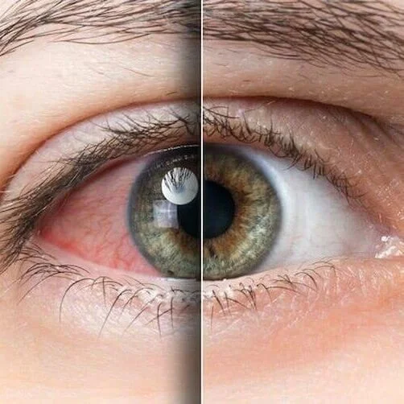

Dry eye symptoms we assess
- Burning, stinging, gritty or foreign body sensation.
- Watery eyes, redness or light sensitivity.
- Blurred or fluctuating vision that changes through the day.
- Contact lens discomfort or screen-related eye fatigue.
- Inflammation, eyelid margin issues and tear film instability.
Personalised treatment planning
Management may include tear support, eyelid care, environmental changes, medication review, anti-inflammatory strategies and follow-up monitoring. The goal is to restore comfort, stabilise vision and protect the ocular surface.